The elemental knights' ruins (candidates)
Three layouts in each element's stones. In the game: /dross showcase knight_ruins.
No. 1 Ice: Broken Gate
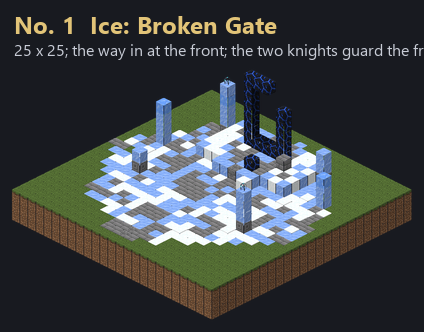
No. 2 Ice: Fallen Ring
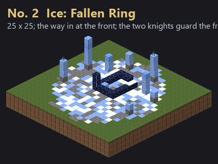
No. 3 Ice: Ruined Shrine
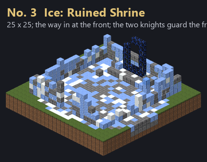
No. 4 Poison: Broken Gate
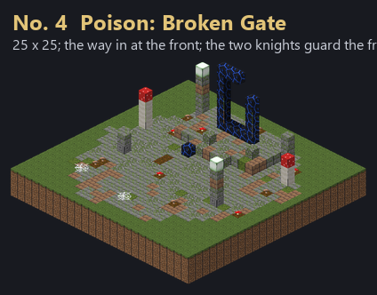
No. 5 Poison: Fallen Ring
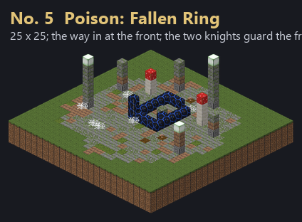
No. 6 Poison: Ruined Shrine
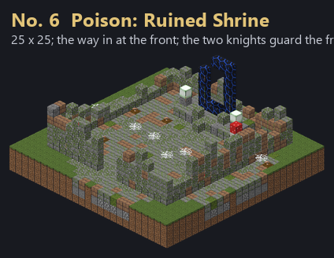
No. 7 Fire: Broken Gate
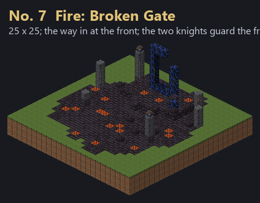
No. 8 Fire: Fallen Ring
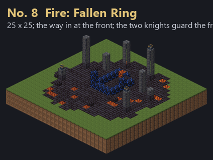
No. 9 Fire: Ruined Shrine
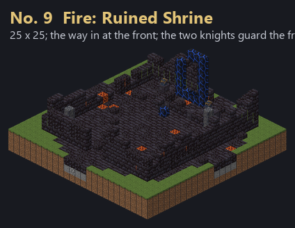
No. 10 Thunder: Broken Gate
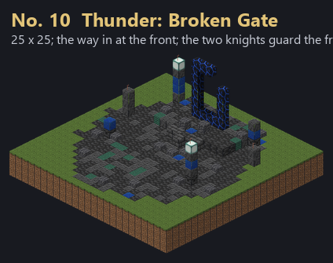
No. 11 Thunder: Fallen Ring
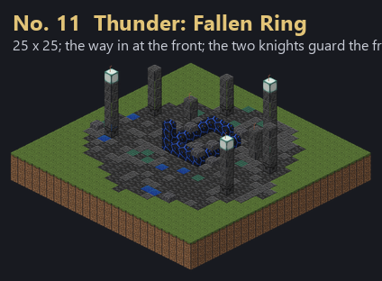
No. 12 Thunder: Ruined Shrine
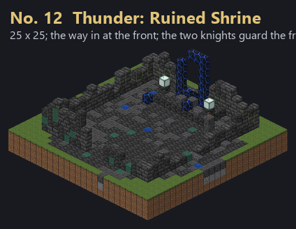
No. 13 Earth: Broken Gate
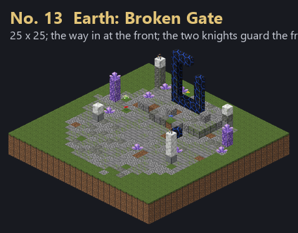
No. 14 Earth: Fallen Ring
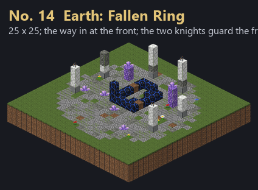
No. 15 Earth: Ruined Shrine
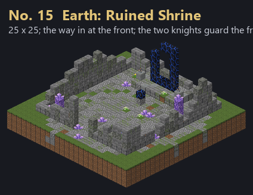